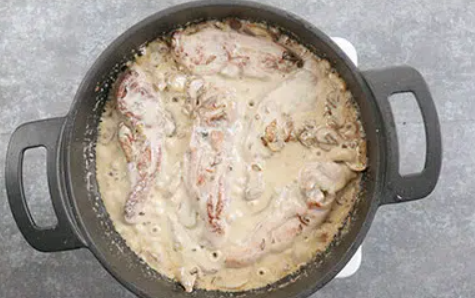

Ingredientes
General
- 500 g de chuletas de pavo
- 1 cebolla pequeña
- 3 dientes de ajo
- 200 ml de nata líquida de cocina ligera
- 200 g de champiñones limpios y laminados
- Sal, pimienta y nuez moscada
- Perejil fresco picado
- Aceite de oliva
- 2 hojas de laurel
- Una hoja de laurel al gusto.
Pasos a seguir
Elaboracion Paso a paso
- Salpimentamos las chuletas. En el caso de que uses chuletas al ajillo, como nosotros, o chuletas a las finas hierbas, no es necesario salpimentar, ya vienen aderezadas. Las doramos en un sartén antiadherente con un fondo de aceite.
- Ponemos el fuego medio alto, tienen que tomar color y dorarse por igual, pero sin resecarse. Las vamos retirando cuando estén al punto y las reservamos.
- En esa misma grasa (si es necesario, añade más aceite), ponemos a pochar la cebolla y ajos picados con el laurel.
- Cuando empiecen a tomar color añadimos los champiñones y vamos salteando durante unos 5 minutos hasta que se oscurezcan y enternezcan. Salpimentamos al gusto y añadimos perejil picado.
- Volvemos a poner las chuletas y las acomodamos entre los champiñones. Incorporamos la nata y un toque de nuez moscada, y movemos la cazuela en vaivén un par de minutos. La salsa tiene que reducir un poco y tomar color, mientras se mezclan e integran todos los sabores.
